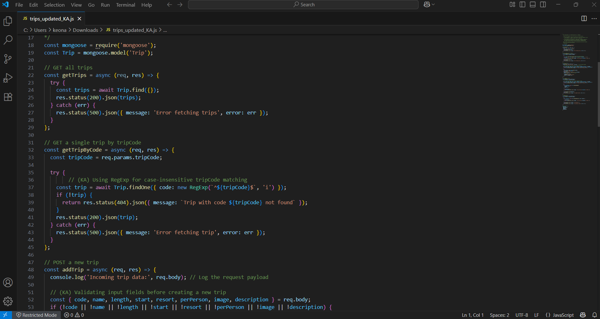
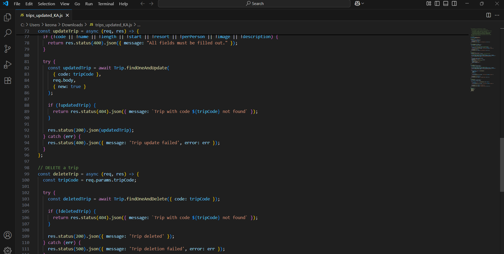

Artifact Overview
For the databases category, I chose to enhance the backend of my Travlr Getaways full-stack app from CS 340. This web app helps users browse and manage travel listings stored in a MongoDB database. Originally, the API worked — but it lacked real polish. For my enhancement, I refactored the Express backend to include input validation, cleaner error handling, and a better search experience using case-insensitive trip code matching.
These changes may seem small, but they go a long way in making the app more robust and usable. I also tightened up the logic to ensure all trip creation fields are properly validated before anything hits the database. This helped reinforce my understanding of clean, secure API design and how to better protect data in a real-world app.
What I Worked On
I cleaned up the core routes — GET, POST, PUT, DELETE — in the `trips.js` file. One of the more interesting improvements was switching the trip code search to use a regular expression that allows for case-insensitive matching, so users aren’t blocked if they type "NYC01" instead of "nyc01". I also added logic to reject incomplete requests and give meaningful error messages back to the client.
Here’s what the updated code looks like:
 Reflection
This wasn’t just about cleaner code — it was about thinking through the user experience from the backend. These enhancements helped me approach database logic more defensively while also thinking like a user: what happens when someone makes a mistake or types something off? How should the app respond? Small things like validating fields and clear errors go a long way in building trust in a tool.
I’ve bundled the full updated source code in the folder for this section if you'd like to take a closer look.